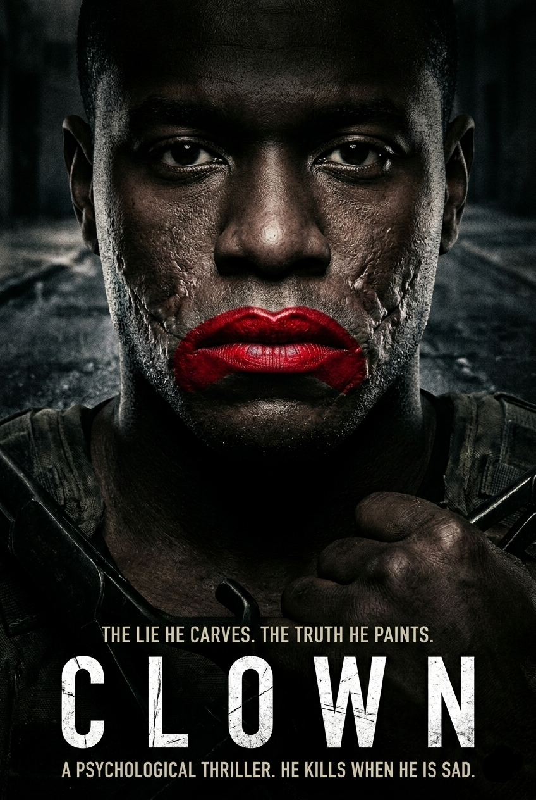

CLOWN
"In a claustrophobic psychological game of mirrors, five strangers find themselves trapped in a space where the truth is the only exit. As the mask of 'Clown' begins to slip, they must decide if they are watching a performance—or if they are the punchline of a lethal cosmic joke."

KEY ART // RECOVERY: PRIMARY POSTER
CLOWN PROTOCOL // STAGE 1
The Treatment
The story focuses on five central characters, each stripped of their social standing and forced into a singular, windowless environment. The architecture of the space is designed to trigger memory and confession.
Central to the tension is "The Clown"—not a figure in makeup, but a psychological presence that forces the others to confront the "masks" they wear in daily life. As the narrative unfolds, the layers of their connected pasts are peeled away.
The climax is a masterclass in tension, where the 5 characters realize they aren't just prisoners, but participants in a larger narrative experiment. The film explores the thin line between humor and horror, proving that the most terrifying thing a person can face is their own reflection without the mask.
Annotate the Ledger
Log your entry on the character dynamics and the 'Clown' archetype.